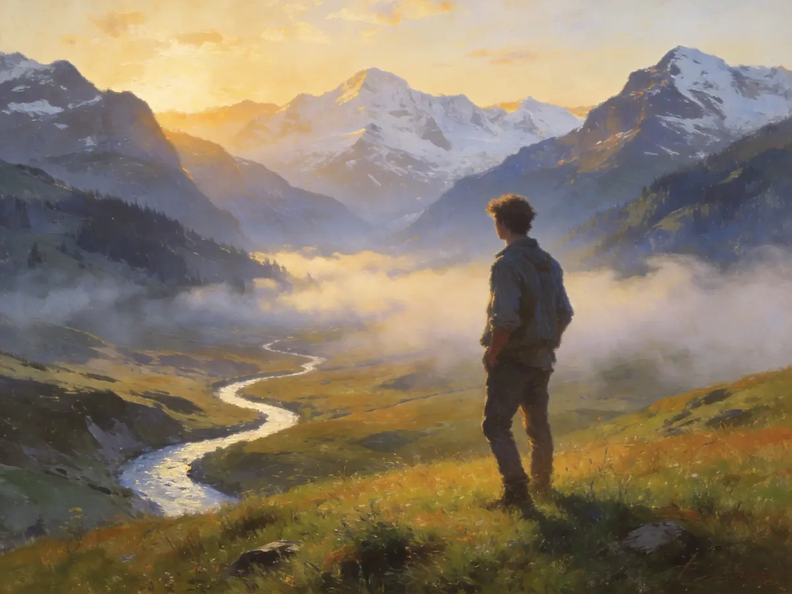
1904
彼得·卡门青德
Peter Camenzind
一个瑞士山村少年走向城市的旅程——在慕尼黑和苏黎世之间徘徊，经历了友情、爱情与孤独，最终回到山间，在自然与人类之爱中找到归宿。黑塞的处女作一鸣惊人，托马斯·曼盛赞其"清新如阿尔卑斯山风"。这部作品奠定了黑塞贯穿一生的母题：现代人的精神漂泊与回归自然。
赫尔曼·黑塞，一位用灵魂书写的精神炼金术士。他的十一部作品不是小说，而是一次次灵魂的探险——从乡愁到觉醒，从分裂到整合，从个体到宇宙。每一部都是一面镜子，映照出我们内心中尚未抵达的精神王国。
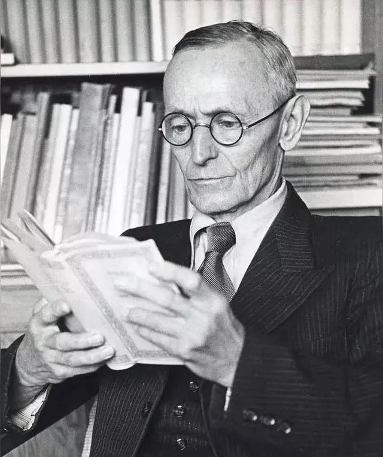

一个瑞士山村少年走向城市的旅程——在慕尼黑和苏黎世之间徘徊，经历了友情、爱情与孤独，最终回到山间，在自然与人类之爱中找到归宿。黑塞的处女作一鸣惊人，托马斯·曼盛赞其"清新如阿尔卑斯山风"。这部作品奠定了黑塞贯穿一生的母题：现代人的精神漂泊与回归自然。
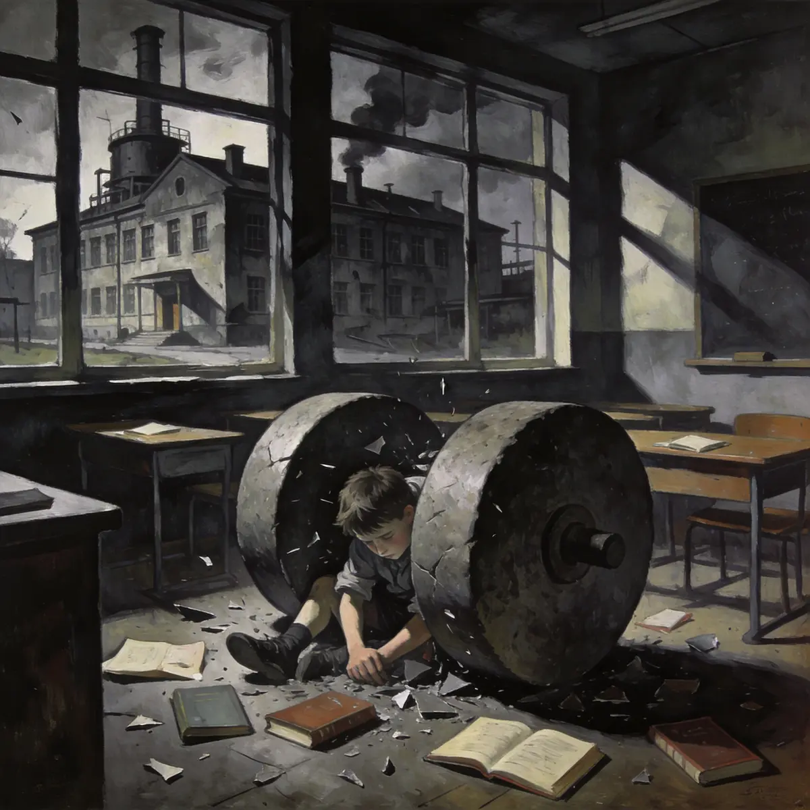
以毛尔布隆神学院经历为原型，讲述少年汉斯在压抑的教育机器下从天才走向毁灭。黑塞最锋利的社会批判——尖子生的悲剧不是不够努力，而是从未被允许成为自己。1906年出版后引发德国教育界震动，被比作"德国的〈红与黑〉"。黑塞本人坦言："这是我伤疤上长出的文字。"
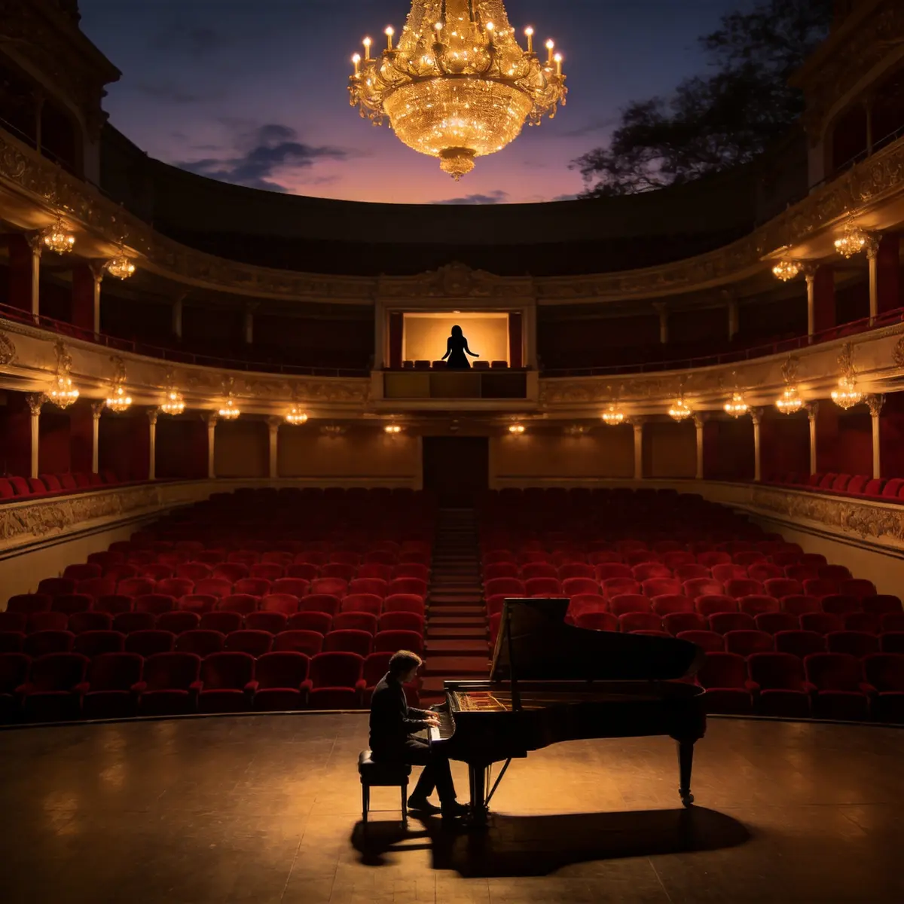
作曲家库恩在一次意外中致残后，与女高音格特鲁德和歌唱家穆特之间的三角纠葛。探讨了一个哲学命题：两颗孤独的灵魂能否通过艺术真正相遇？尼采式的"日神与酒神"对立已隐现其中。黑塞本人是莫扎特的狂热爱好者，书中大量音乐分析出自少年时期在教堂唱诗班的亲身经历。
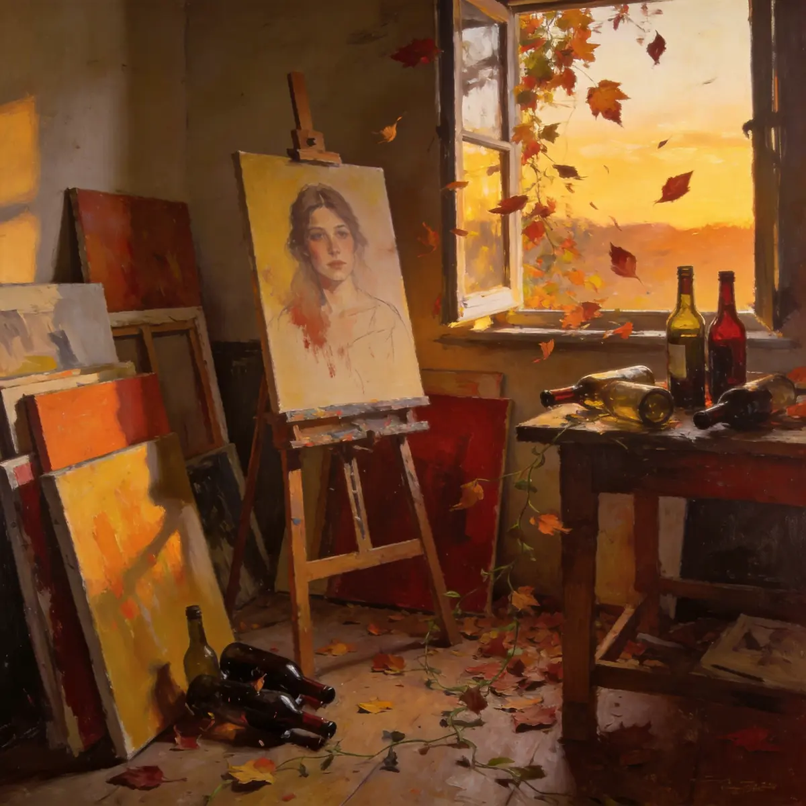
以自身第一段婚姻为蓝本，讲述画家约翰在创作冲动与家庭责任之间的撕裂。这部"家庭悲剧"（黑塞自语）以近乎冷酷的旁观者视角解剖了一段婚姻的死亡——作者写作时自己正经历着完全相同的崩溃。研究者认为，这是理解黑塞1910年代精神危机的钥匙文本。
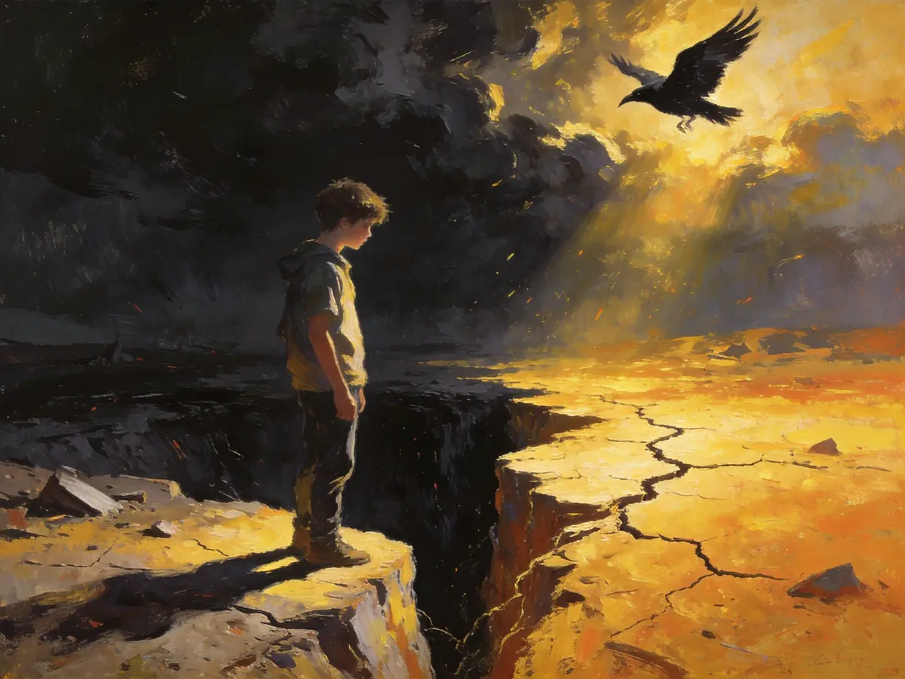
1919年以"埃米尔·辛克莱"为笔名出版——许多德国青年以为作者是个20岁新锐作家。荣格心理学首次文学化：阿尼玛（夏娃夫人）、阴影（克罗默）、自性化（破壳）。托马斯·曼称其为"德国的〈天堂与地狱〉"。1960年代成为全球青年反文化运动核心文本。
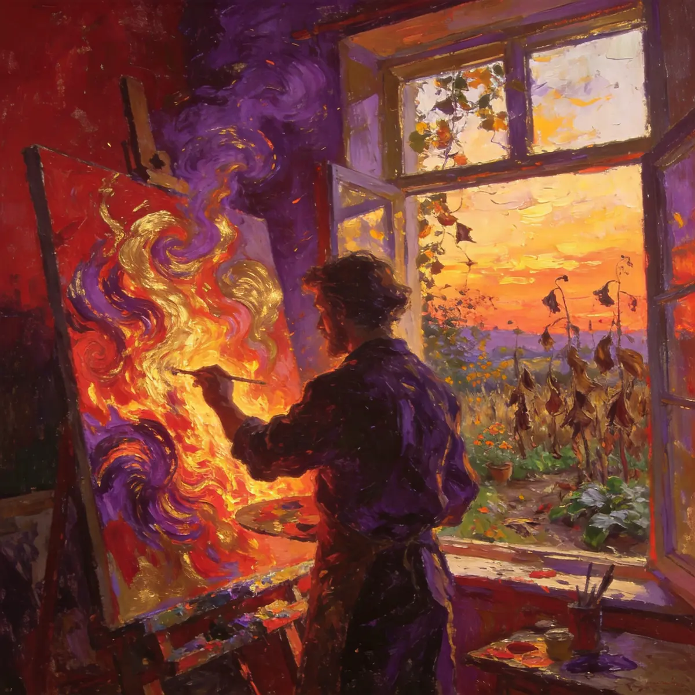
以好友表现主义画家路易斯·莫伊莱特为原型。克林索尔用酗酒、狂欢、暴烈色彩对抗逼近的死亡——不是哀叹，而是燃烧。黑塞自己称之为"生命中唯一一次真正纵情的写作"。色彩之浓烈被誉为"文学中的梵高"，与同年完成的〈德米安〉形成一对：一个向内深入灵魂，一个向外燃烧世界。
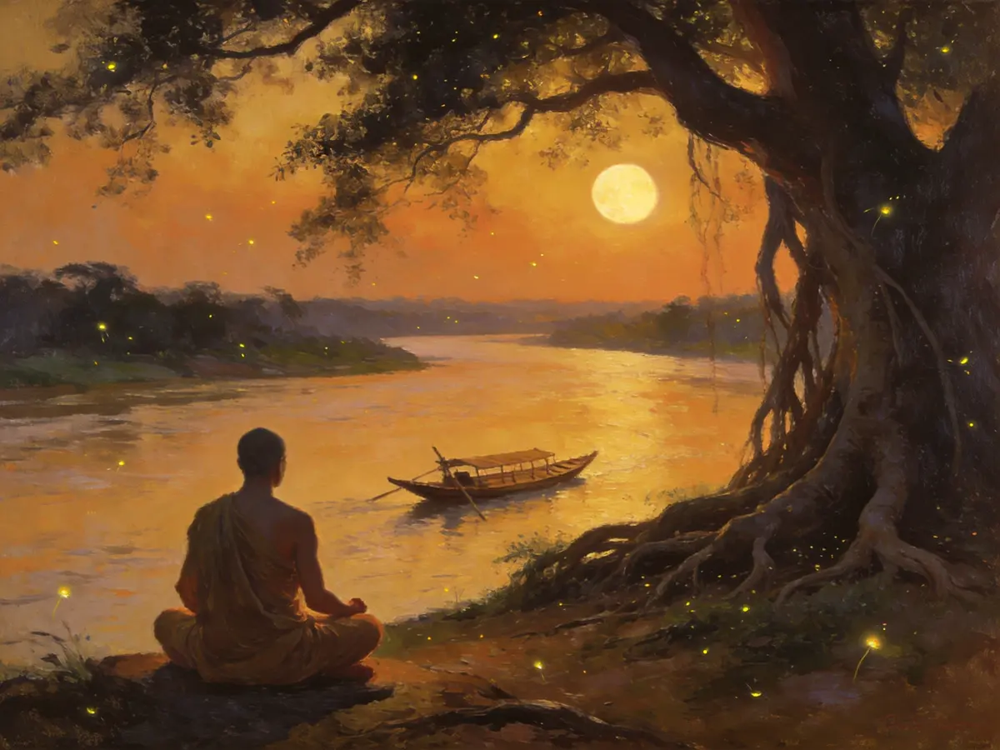
婆罗门之子悉达多从沙门苦行到世俗欲望，从富商到赌徒，最终在河边领悟：智慧不可言传，只能亲历。黑塞把印度哲学、佛教与西方存在主义熔于一炉。1922年出版时反应平淡，1960年代经美国反文化运动重新发现——成为西方知识分子理解东方智慧的经典入口。亨利·米勒说："这部小说比一千本哲学书更接近真理。"
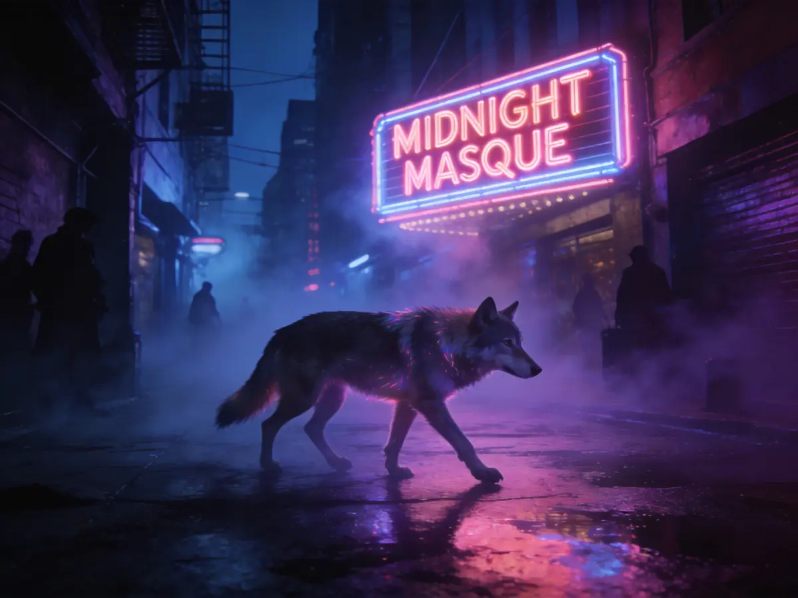
1927年出版的"灵魂自传"——哈利·哈勒就是黑塞自己。莫扎特与爵士乐、歌德与汽车——黑塞用超现实主义解剖了现代人的灵魂分裂。荣格分析心理学的文学巅峰。托马斯·曼称之为"德国的〈尤利西斯〉"。1960年代青年人手一本——列侬、凯鲁亚克、鲍勃·迪伦都是哈勒的同类。
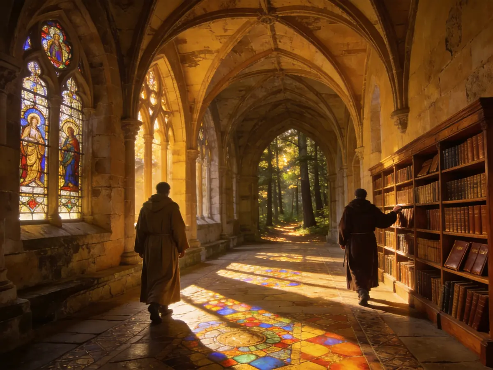
理性自律的纳尔齐斯（学者/禁欲）与感性流浪的歌尔德蒙（艺术家/纵欲）——两条截然相反的灵魂路径，却在生命尽头相遇。不是对立，而是互补。黑塞对二律背反（Antinomie）最深刻的表达——理念与感官、精神与自然从来不是选择题。黑塞自认这是他"最具形式完美"的小说。
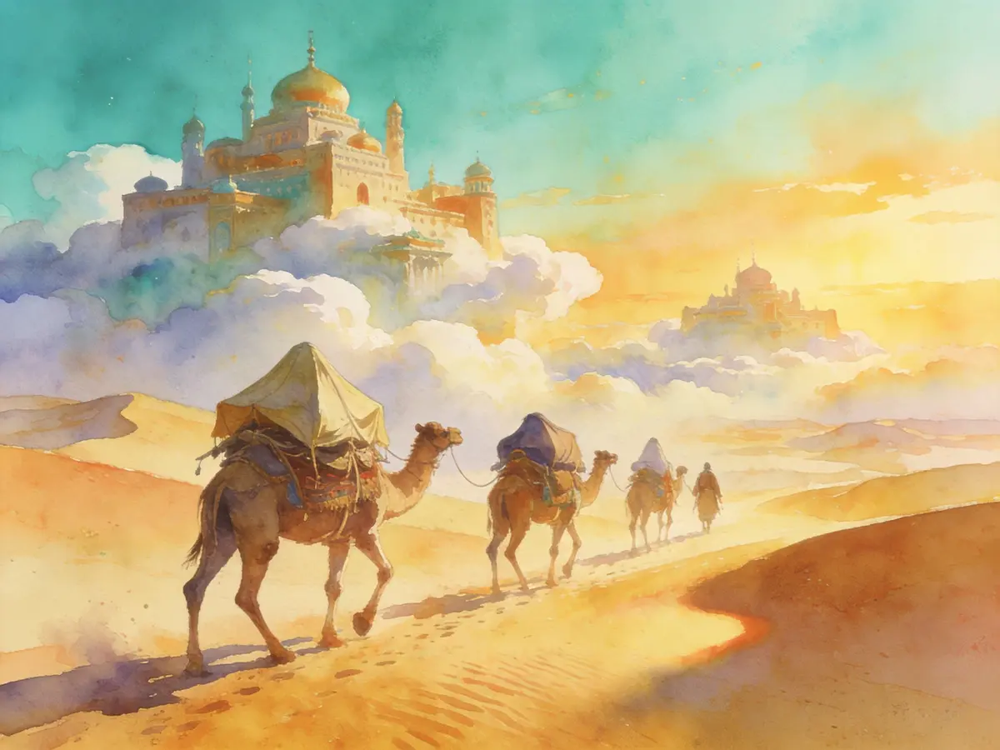
一部薄薄的中篇，却是黑塞最神秘的作品。秘密结社"圣光联盟"的朝圣之旅——成员中有莫扎特、歌德、唐·吉诃德穿越时空同行。黑塞用这部小说回应了一个深刻问题：当一个人丢掉了他的信仰共同体，他能否独自成圣？这是〈玻璃球游戏〉的序章。
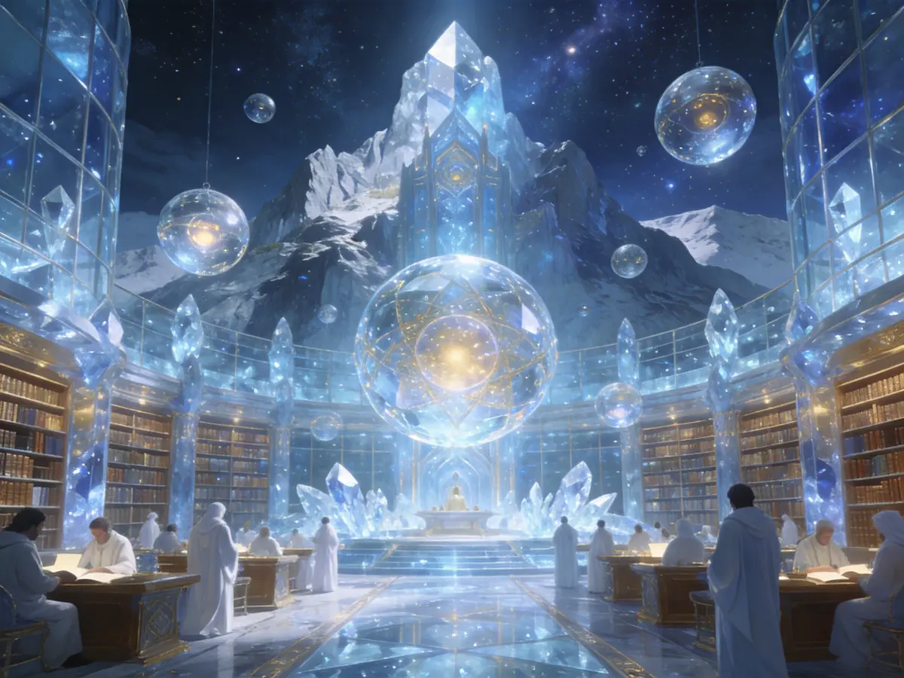
1943年出版——盟军轰炸柏林时，黑塞完成了这部"世界之书"。未来乌托邦卡斯塔利亚中的精英以"玻璃球游戏"追求真理。主人公克内希特从学徒到宗师、从秩序到出走——一个灵魂在精神自由与集体责任之间的永恒张力。诺奖颁奖词称其"以宏大叙事展现了人类精神的最高秩序"。托马斯·曼称其为"继〈魔山〉之后德语文学最伟大的成就"。
颁奖词：「他那灵思盎然的诗篇——它们一方面具有高度的创意和深刻的洞见，一方面象征古典的人道理想与高尚的风格。」
„for his inspired writings which, while growing in boldness and penetration, exemplify the classical humanitarian ideals and high qualities of style“
— Swedish Academy, Nobel Prize in Literature 1946
瑞典学院常任秘书安德斯·厄斯特林在授奖辞中特别指出："黑塞的〈玻璃球游戏〉以宏大叙事展现了人类精神的最高秩序，其语言具有雕刻般的精确与音乐般的韵律。"
同年获奖的还有：安德烈·纪德（1947）· T.S.艾略特（1948）· 威廉·福克纳（1949）· 伯特兰·罗素（1950）。黑塞在战后的第一批获奖者中，代表了一种被战争摧残却未被摧毁的欧洲人文主义传统。
黑塞一生创作了超过3000幅水彩画——提契诺的山峦、卢加诺湖的波光、蒙塔尼奥拉的花园。他不是"会画画的作家"，而是一个在色彩中寻找与文字平行真理的视觉诗人。他的画作曾在瑞士多次展出，研究者认为其"色彩的透明感"与他文字中的"精神清澈"是同一种品质。
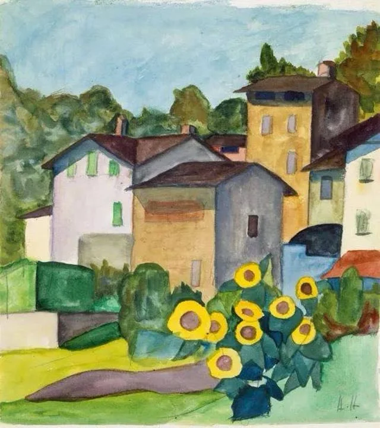
提契诺田园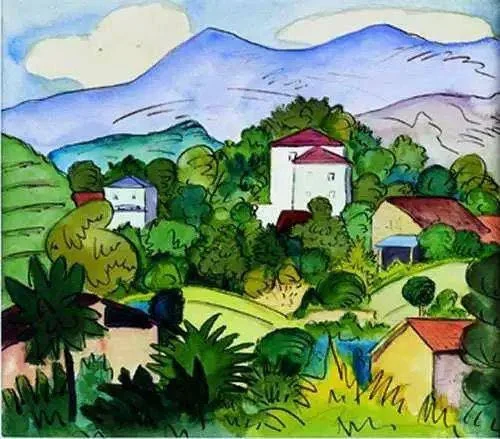
蒙塔尼奥拉群山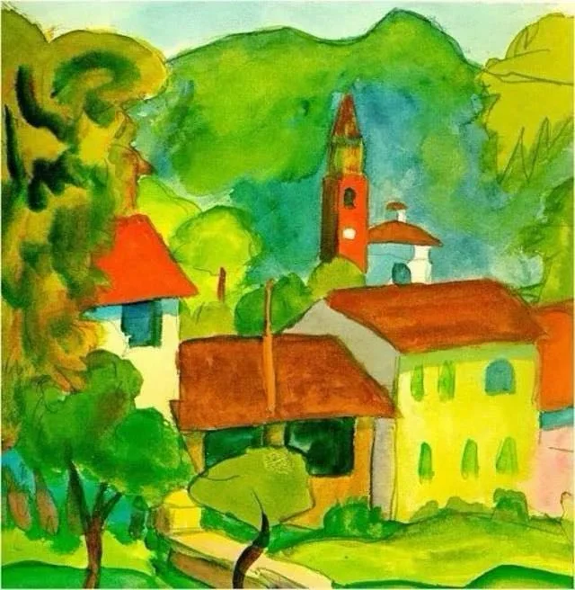
山间村落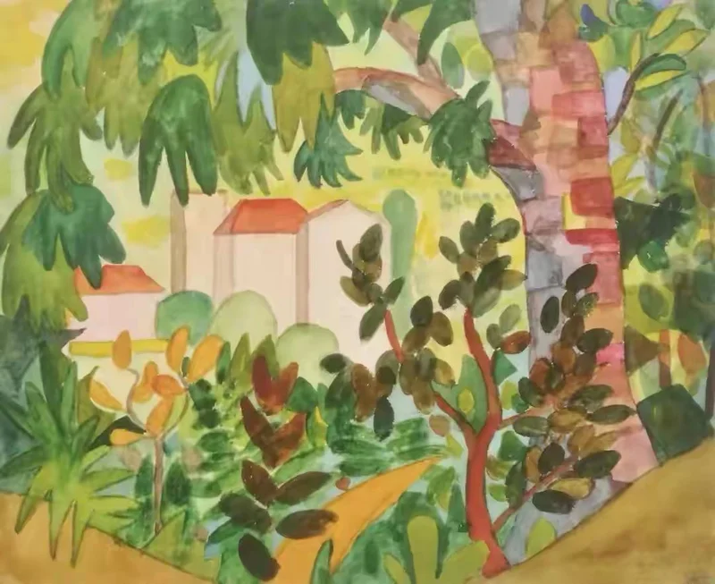
热带花园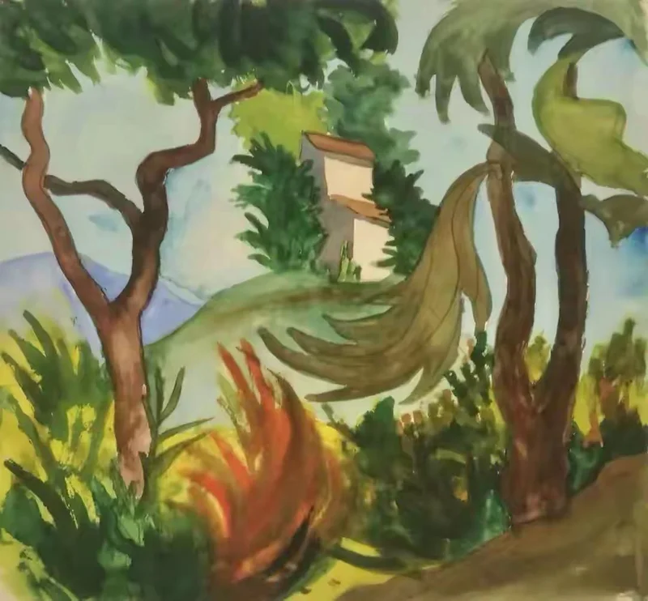
密林奇树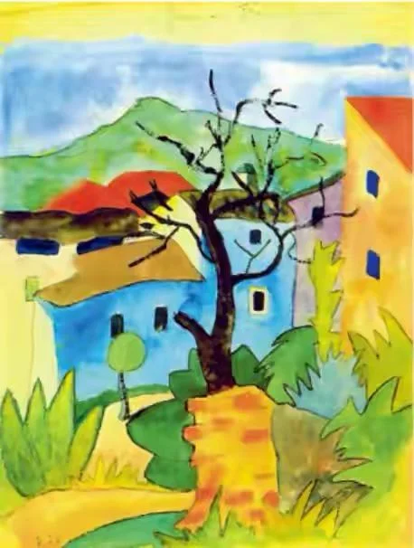
乡村房屋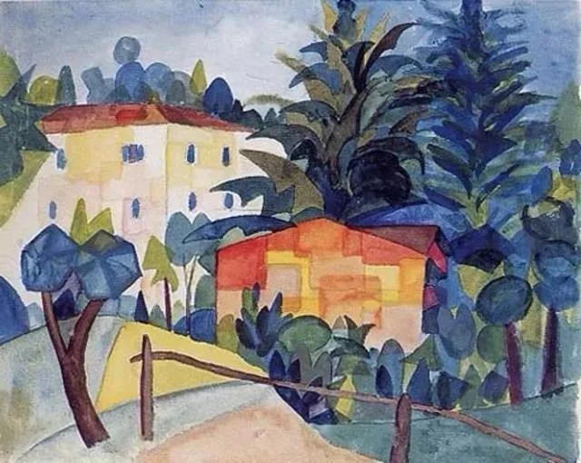
山坡村落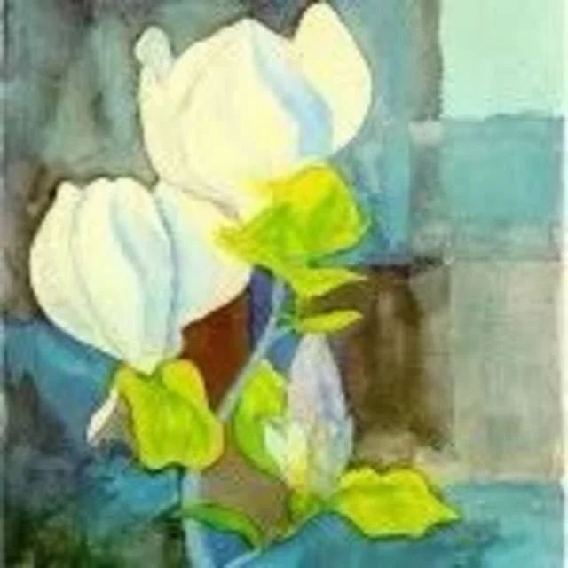
白花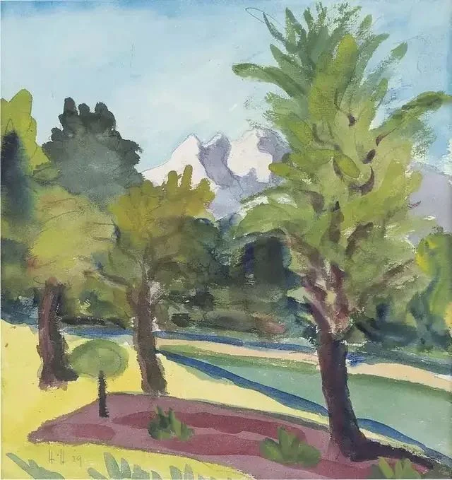
河流雪山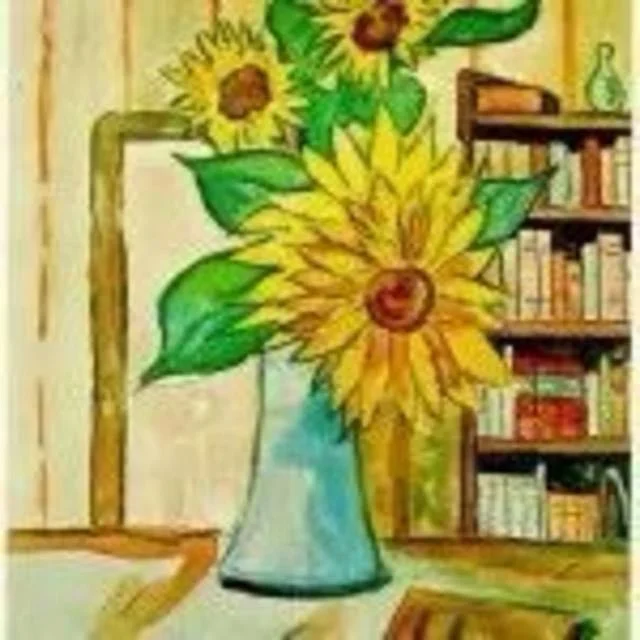
向日葵花瓶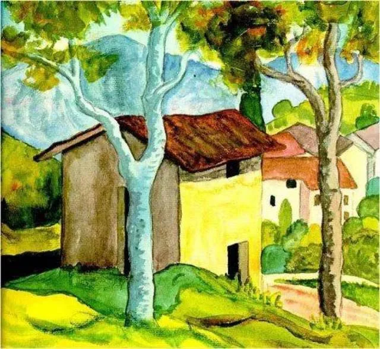
黄墙红瓦村庄